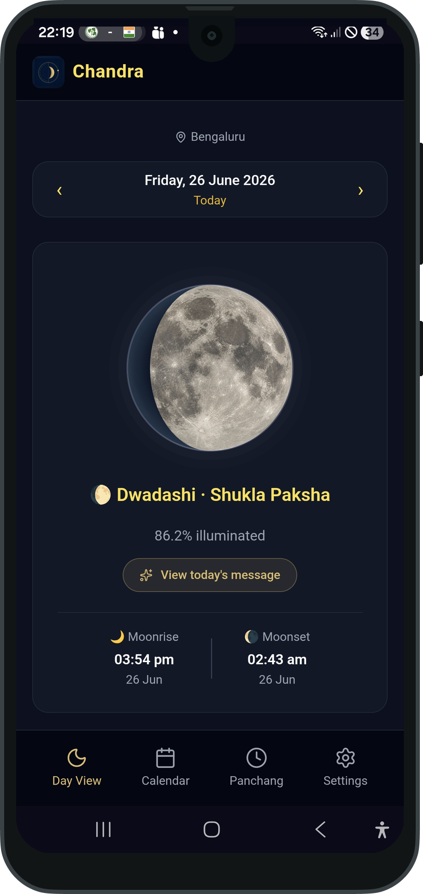
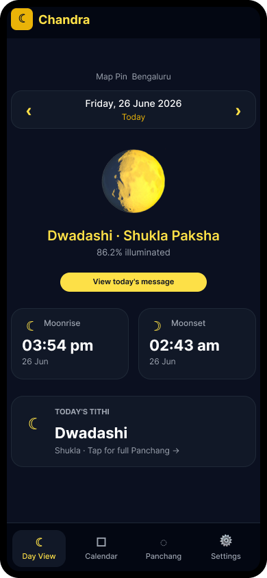
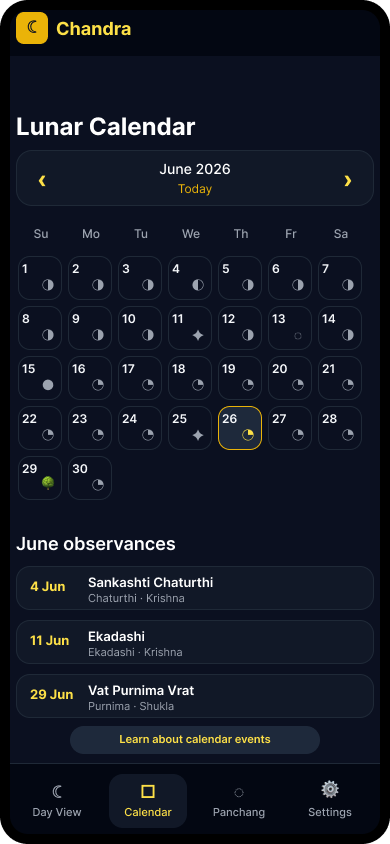
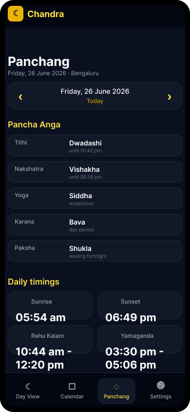
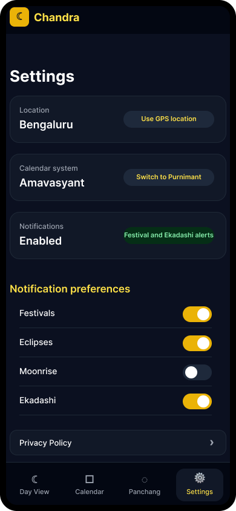
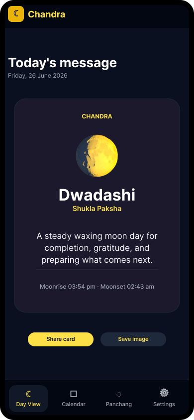

Useful but fragmented tools
Claude identified timeanddate.com, DrikPanchang, SomRatri, MoonGazer, My Moon Tracker and ISRO VEDAS as adjacent products with different strengths.
AI-assisted product case study
Chandra began as a one-month experiment to understand how capable AI could be across a complete product cycle. I used Claude for initial research, competitor analysis, accessibility review, design-system direction and product planning, then used Codex to build, debug, test and prepare a Hindu moon-tracking PWA for Google Play store which is currently in closed testing phase.

Starting point
The core objective was to see how capable AI could be when used across research, product strategy, interface design, accessibility review, coding, testing and launch preparation. Panchang and moon tracking made the experiment demanding because the domain combines astronomy, Hindu calendar conventions, regional practices, Sanskrit terminology and everyday usability.
The design challenge was not simply to show more Panchang data. It was to make accurate cultural information easier to understand for people who either use printed Panchang daily or are curious but intimidated by existing digital tools.
Trusted by daily Panchang users and familiar for ritual reference.
Not interactive, searchable or designed for quick mobile lookup.
Considered more accurate by expert users for many calculated values.
Online versions were described as clumsy and hard to navigate.
Easy to access from mobile devices.
Non-expert users found many of them ad-heavy, noisy and difficult to understand.
Mobile-first, focused on daily moon, tithi, events and Panchang basics.
Version 1 deliberately stays basic and understandable before adding deeper features.
Claude as research partner
The first prompt explored whether a responsive web application could help people track the moon with Indian cultural context, what could be built, what already existed and whether the product should begin as a web app or cross-platform mobile app. Claude's response created a starting landscape and helped frame the PWA-first direction.
Claude identified timeanddate.com, DrikPanchang, SomRatri, MoonGazer, My Moon Tracker and ISRO VEDAS as adjacent products with different strengths.
The opportunity was not raw astronomy data alone. It was the gap between modern moon trackers and dense traditional Panchang tools.
Claude recommended validating the core product as a PWA before investing in native-only features such as home-screen widgets.
Claude helped structure the product opportunity and competitor landscape.
Claude supported accessibility review and design-system thinking.
Codex implemented screens, calculation logic, PWA behavior and fixes.
Codex helped run builds, backend checks and release-readiness work.
Human grounding
Before development, conversations with 4 to 5 people explored how they use Panchang and what they do with the data. These were not formal research interviews, but the discussions were detailed enough to start the design process. After the PWA was built, 15 people tested it: 3 daily Panchang users and 12 people who were interested but did not know how to use Panchang confidently.
These testers used standard Pambu Panchang books to track moon progress, festivals and auspicious timings. Their feedback helped surface calculation accuracy concerns and the distinction between printed Panchang traditions and computer-calculated Thiru Kanidam.
These testers validated the beginner problem. They were interested in Panchang information, but existing digital tools felt cluttered, ad-heavy and hard to use.
Informal discussions with 4 to 5 people shaped the initial design direction.
Claude and Codex supported research, design critique, implementation and debugging.
15 people manually tested the app, including 3 regular Panchang users.
Google Play closed testing surfaced platform polish issues such as app icon and splash-screen mismatch.
Design strategy
The first version needed to be useful without overwhelming people. The experience was separated into four clear areas: Day View for the daily ritual moment, Calendar for planning, Panchang for detailed information and Settings for city, calendar system and notification control.
Before building the app, I used Codex connected to Figma through MCP as a brainstorming partner. Based on the research direction, Panchang user needs and product constraints, I prompted Codex to generate the right low-fidelity screen set and detailed user flows in Figma. The screens helped shape the daily moon moment, calendar scan, Panchang detail view, settings controls and shareable daily message, while the user flows clarified the navigation model, decision points and edge cases before the PWA was developed.





Design consistency and accessibility
Using the low-fidelity screens and user flows as the starting point, I began developing the application. The first version of the developed screens looked consistent at a glance, but detailed review showed different colors, styles and icon choices across the app. A design system defined colors, typography, spacing, cards, toggles and iconography. Lucide icons replaced most UI emojis, while moon phase emojis were retained where they carried semantic meaning. The first version was also tested for accessibility, which helped identify usability gaps before launch readiness.
AI helped produce and critique the product, but human review was still needed to notice inconsistency, define the design-system work and request accessibility testing before treating the app as launch-ready.
Codex as implementation partner
The app required more than screen generation. Codex supported the build across React screens, calculation logic, service worker behavior, Firebase notifications, accessibility remediation, build verification and Google Play TWA preparation.
Chandra uses browser-side calculations for tithi, nakshatra, moonrise, moonset and Panchang data rather than relying on a remote Panchang API.
The festival engine evolved from simple matching into a rule-based, window-aware system that respects ritual timing and calendar-system differences.
The project moved from Vercel-hosted PWA to Google Play closed testing through a Trusted Web Activity wrapper.
Daily display had to match Panchang convention.
Sample at local sunrise, not midnight.
Sidereal calculations affect Nakshatra, Yoga, Rashi, Masa and Sankranti.
Calculate date-sensitive Lahiri-style ayanamsha rather than keep a fixed constant.
Many Hindu festivals depend on ritual windows, not just civil date.
Use window-aware rules for sunrise, pradosh, nishita, moonrise and other periods.
Users asked whether Swiss Ephemeris would be more accurate.
Treat this as future validation, not a blind engine replacement.
Feedback-driven roadmap
Not every story point belongs in version 1. The testing feedback helped identify what could be incorporated quickly, what required deeper calculation validation and what depended on a future native application.
Google Play closed testing
Chandra is currently in Google Play closed testing. Most product and design updates can continue through the PWA deployment flow, while wrapper-level issues such as launcher icons, splash screens and Android signing require Play Store-specific work.
Closed testing revealed a mismatch between the web app identity and the Android wrapper assets. The native launcher, maskable icon, notification and splash assets were regenerated and updated.
Two testers specifically highlighted that users should not receive alerts for every festival. The app now supports separate notification preferences.
What the project showed
The biggest learning was not that AI can simply build an app. It was that AI can accelerate research, planning, critique, implementation and release preparation when the designer actively directs the work, checks the output and validates the product with real people. Chandra became a working test of AI as a capability multiplier, not a replacement for product judgment.
For culturally sensitive products, speed is useful only when paired with trust. AI helped the work move fast, but the product became credible only when Panchang users, interested beginners, accessibility review and Play Store testers shaped the next decisions.